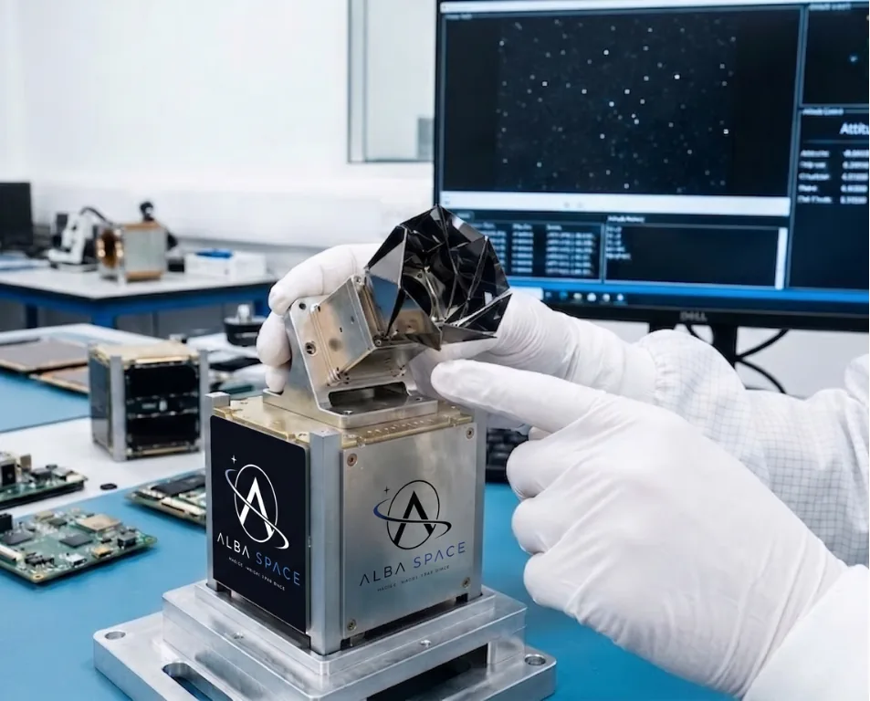
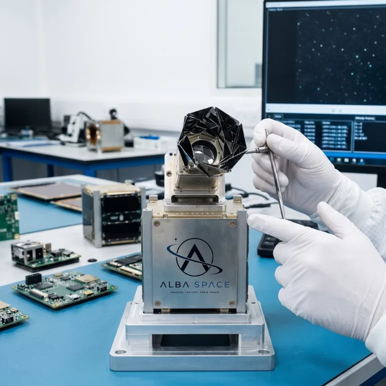
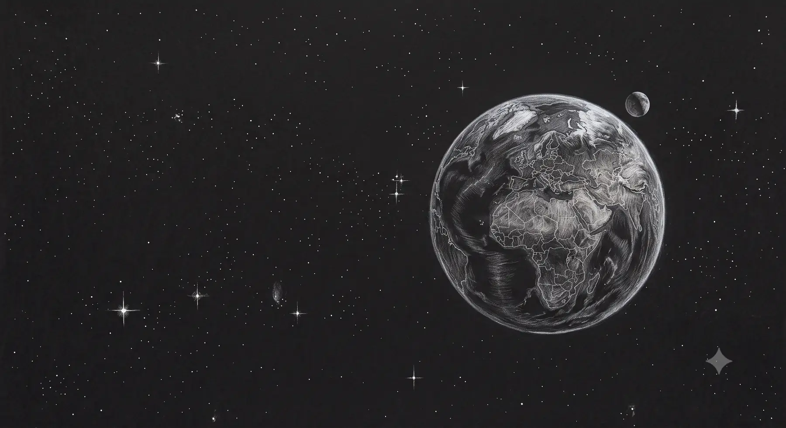

Un instrumento. Tres misiones.
El Star Tracker de Alba Space es un instrumento óptico 3 en 1 para CubeSats. Un solo sensor, con un baffle telescópico que se despliega en órbita, se orienta solo con las estrellas, detecta basura espacial y guía las maniobras de acoplamiento.
Ark Light 1 · diseño de vuelo, en integración de laboratorio
- Masa, con el mecanismo
- 175 g
- Volumen plegado
- 0.13 dm³
- Potencia
- 1.25 W
- Para CubeSats de
- 3U a 12U
Una sola cámara hace tres trabajos.
En una misión tradicional, orientarse, vigilar la basura espacial y acoplarse con otro vehículo piden cámaras y equipo distintos: más costo, más masa y más consumo. Nuestro instrumento corre los tres algoritmos en paralelo, en una computadora de vuelo con sistema operativo en tiempo real.
Cómo sabe hacia dónde apunta.
Resuelve solo el problema que en el espacio llaman «perdido en el espacio»: sin saber nada antes, fotografía el cielo, reconoce las estrellas y calcula su orientación. Toca una etapa o deja que corra.
Basura escondida entre las estrellas.
Entre dos fotos seguidas las estrellas no se mueven, pero la basura y los satélites sí. El instrumento resta una foto de la otra, limpia lo que sobra y se queda con lo que se mueve: su posición, su rumbo y su velocidad.
Un zoom hecho de estructura.
El baffle no sólo protege de la luz. Al extenderlo se mueve la óptica y cambia la distancia focal: el mismo sensor pasa de vigilar más de 20 grados de cielo a ver de cerca el vehículo con el que se va a acoplar.
- Campo de visión
- 22.0°
- Distancia focal
- 16 mm
- Modo
- Orientación
Un baffle que se despliega solo en órbita.
Un baffle fijo ocupa volumen valioso en el lanzamiento. El nuestro viaja plegado, con menos de 50 mm de largo, y se extiende al llegar a órbita.
Hasta la mitad del volumen
Bloquea la luz parásita en órbita sin quitarle espacio a la carga del CubeSat: 0.13 dm³ plegado y 0.28 dm³ desplegado.
Liberación con respaldo
Un circuito doble corta un hilo por calor y unas guías con resorte empujan cada segmento a su lugar.
Hecho para el vacío
Bujes de teflón evitan que las piezas de metal se suelden entre sí en el vacío, para que funcione tras meses en órbita.
Plegado para el lanzamiento · 0.13 dm³

Un instrumento, muchas misiones.
Constelaciones de satélites
Apuntar con precisión y vigilar lo que pasa alrededor, en cada satélite de la flota y sin equipo extra.
Seguridad en el espacio
Vigilar la basura espacial y ayudar a evitar choques desde la órbita.
Ciencia y observación de la Tierra
Un apuntamiento estable para instrumentos exigentes, con poca masa y poco volumen.
Servicio e inspección
Imágenes de cerca para acercarse, inspeccionar y acoplarse con otro vehículo.

Pongamos tu misión en órbita.
Para revisiones preliminares de diseño, propuestas de integración o lo que necesite tu misión, platica con el equipo de ingeniería de Alba Space.